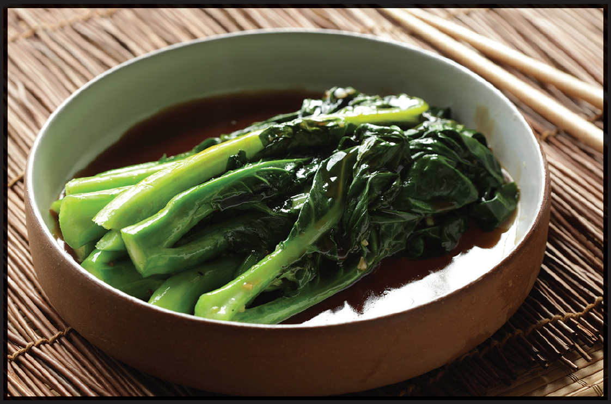

Stir-Fried Greens Technique 3: With Oyster Sauce
What it works best with: Stalky and crunchy greens (such as bok choy, yu choy, or water spinach)
CHINESE BROCCOLI WITH OYSTER SAUCE
|
Yield Serves 4 Active Time 20 minutes Total Time 20 minutes |
I love adding some fried garlic or shallots to this dish right before serving. You can use store-bought fried garlic or shallots, or homemade fried shallots (here), or just leave them off if you prefer. |
Chinese broccoli with oyster sauce is a classic dim sum side dish, but it’s so good that variations have managed to travel throughout Asia in various forms (not to mention to the United States), and it doesn’t always have to come with dumplings. It’s also great as a side dish with meat- or tofu-based stir-fries or simmered dishes. As with all oyster-sauce-based dishes, the quality of the finished dish will depend on the quality of the oyster sauce, so look for bottles that list oysters as the very first ingredient.
Chinese broccoli (gai lan) is widely available at Asian supermarkets. It’s got crunchy stems and tender leaves that resemble mature spinach. Older gai lan can tend to get a little stringy and strongly flavored, so look for slender bright green stalks. If there are any flowers on the stalks (they look like very small broccoli florets), they should be dark or pale green. Yellow florets are an indication that the gai lan is probably past its prime. If you’re shopping in a Western supermarket, broccolini works wonderfully in this dish.
INGREDIENTS
For the Broccoli:
1 pound (450 g) Chinese broccoli (gai lan) or broccolini, tough stems trimmed off and discarded
Kosher salt
For the Sauce:
3 tablespoons (45 ml) oyster sauce
1 teaspoon (3 g) cornstarch
3 tablespoons (45 ml) homemade or store-bought low-sodium chicken stock or water
1 tablespoon (15 ml) Shaoxing wine
1 tablespoon (15 ml) light soy sauce or shoyu
½ teaspoon (2 g) sugar
For the Stir-Fry:
1 tablespoon (15 ml) peanut, rice bran, or other neutral oil
3 medium garlic cloves (8 g), smashed and very roughly chopped
2 teaspoons (5 g) minced fresh ginger (about ½-inch segment)
A few tablespoons fried garlic or shallots (optional; see Note)
DIRECTIONS
1For the Broccoli: Bring 1½ quarts lightly salted water to a boil in a wok. Add the broccoli, stir well, cover, and boil, shaking the pan occasionally, until bright green but still quite firm, about 30 seconds. Drain the broccoli and spread into a single layer on a sheet tray or large plate.
2For the Sauce: Combine the oyster sauce and cornstarch in a small bowl and stir to dissolve. Add the stock or water, wine, soy sauce, and sugar and stir until the sugar is dissolved.
3For the Stir-Fry: Heat the wok over high heat until lightly smoking. Add the oil and swirl to coat. Add the garlic and ginger and stir-fry until fragrant and garlic is starting to brown around the edges, about 30 seconds. Add the broccoli and toss to coat in the garlic and ginger oil. Transfer to a serving platter.
4Return the wok to high heat (no need to wipe it out) and immediately add the sauce ingredients. Bring to a boil and reduce until lightly thickened, about 45 seconds. Pour the sauce over the broccoli on the serving platter. Sprinkle with fried garlic (if using) and serve immediately.